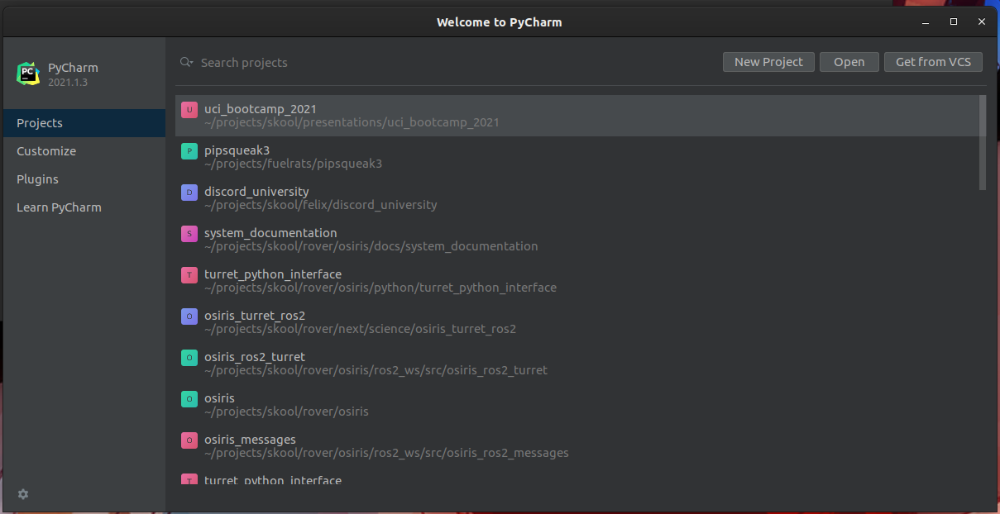
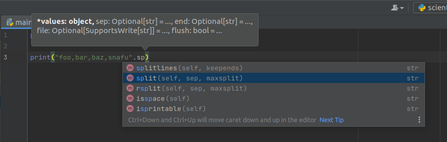

Preface
This document is still a WIP, some pages are incomplete or missing
Purpose
This document is intended to give an introduction into Python, the programming language. It further aims to introduce the reader to core tools and applications of Python as it relates to Scientific Computing.
This document is not an exhaustive guide to Python as a whole, as such a document would be extremely long. Instead this document aims to highlight important core concepts necessary to understand how to use the language.
This document is also not a how-to, though the author has kept the syntax used as simple as possible and commented the code extensively.
This document is, however, written to be usable independently of the presentation it was prepared for.
Intended Audience
The author prepared this document with students of the Physical Sciences in mind.
It is assumed the reader does not know Python, but has been previously exposed to logic and some programming concepts. As such, the first section has been dedicated to explaining the core syntax and basic terminology of the language, which serve as the bedrock the Scientific Computing stack builds off of. The author firmly believes that teaching how to use Python for Scientific Computing first requires the student to understand the fundamentals of Python itself.
Integrated Development Environments (IDE)
As Software Engineers write code, they frequently use a wide range of tools such as linters, compilers, static analyzers, debuggers, etc.
Most of these tools can be run stand-alone from the command line, but is often not as effective as if the tools can be baked into their code editor.
IDEs provide rich integration of both code editing features, bringing tools such as static analysis tooling and debuggers into the same program and window.
What are these tools i hear you ask? Next chapter we will discuss the tools of the trade.
Tools of the trade
IDEs integrate multiple tools to make programming easier.
-
For compiled languages like c++ or Java, you need a compiler.
-
For an interpreted language like Python, you need an interpreter.
-
Frequently, build systems are used to simplify build processies.
- CMake
- Make
- Bazel
- Gradle
- Maven
- etc...
-
Well written code has a test suite, so the developer needs a way to run those tests.
- They also need ways of easily interpreting test results
- Test runners often have unique syntax or features
-
Debuggers.
- GDB (C++, Rust, etc.)
- PDB (Python)
- JDB (Java)
- Etc...
-
Version Control!
- Git
- Subversion
- Team Foundation Server
- etc...
-
Specific to data-science:
- integration with libraries!
- data viewers!
None of this covers the code editor window!
- Syntax highlighting!
- Static Analysis
- Code generation
- Refactoring
- Templates!
- Structural Analysis
PyCharm
For this presentation, I will be presenting using one set of IDEs made by the company Jetbrains.
Specifically, I will be using PyCharm, which is their Python IDE.
This is a professional grade IDE, which you can get for free.
Quick Start
When you open PyCharm up for the first time, you will encounter a screen that looks like this: 
If you haven't done anything with the IDe yet, your projects view will likely be empty.

Pycharm offers sane defaults for a range of application types. When creating a python project, it will even create a virtual environment for you.

Anatomy of the IDE windows
-
Pycharm spawns in one window by default, and includes several "tabs"
-
The left tab is the "project" view: it corresponds to the filesystem structure of the project.
-
the bottom tab has multiple views, in this case the Python console.
-
Other tabs exist, such as the
Terminalwindow which gives access to the OS shell, and even some language-specific features. -
There are also tabs that only show up in certain contexts, such as the debugger window.
Syntax highlighting and Code completion
Now that we have an editor window, we should write some code!
Classically, the jumping off point is hello-world
As we start typing into the main.py provided to us, a window pops up.

This is one of an IDEs central features: Code completion! Also shows usage hints!
- The IDE can render hints on how a function to be used
- The IDE knows what symbols are valid in a given context, and can intellegently present those as you write.
Code Completion
Basically, the IDE has enough intellegence to figure out what you're trying to do, and offer to help
you with it. If you press
The IDE knows what is valid and what is not; if the name of the variable/function/method isn't completing; you've probably gotten something wrong writing the code!
Here is a slightly longer example that demonstrates how this can be useful a bit more clearly:
Say we have an string of values out of a CSV, foo,bar,baz,snafu and we want to split them up so we
can process each value seperately. We happen to know that strings have
a str.split method that gets the job done,
so we start typing that:
(For more information about Python, please attend my second presentation, where I give A crash course in Python for Computer Science)
print("foo,bar,baz,snafu".split(','))

Here, PyCharm clearly understands what kind of objects it has to work with, as well as what operations are valid on them.
To keep these documents and this presentation concise, some details have been omitted. For further reading, please consider reading over PyCharm's user manual
Syntax Highlighting
Syntax highlighting can show, at a glance, if a piece of code is valid syntax and, once you get used to the colors, if the structure looks right.
If your code isn't highlighting the way you expect, something is written incorrectly.
- In this example, x is highlighted as if it is a string!
- It is, in fact, a string, which is clearly incorrect and is why the code fails to run.
- At a glance, the programmer can spot this error, regardless of other tools.
Error Detection
Another feature of a good code editing environment is the ability for the IDE to detect errors as they are introduced.
In the previous slide, PyCharm actually did highlight the error in two different ways:
- Syntax highlighting: the variable declaration was the wrong color
- In the call site of
print, where the variable that wasn't declared was used.

PyCharm told us exactly what went wrong, before we ran the code!
Static Analysis is a property of a development tool to read the source code and check it for errors, WITHOUT running the code.
This can be valuable, especially when the program involves expensive computations, or the exact branch is difficult to trigger.
- Not all errors can be detected this way, but a large amount can be.
Remediating errors.
Let's use a more concrete example for this.
As data scientists, we are likely to work with libraries like Pandas.
Sometimes we may even forget to import the library before attempting to use it!.
For example:
df = pandas.DataFrame()
If we ran this as-is, it will fail since pandas isn't in scope!
PyCharm recognizes this, as it is always statically analyzing the code.
In this case, it even offers a solution:

An IDE cannot fix every conceivable error it may detect. As always: use your best judgement before applying fixes.
Advanced features: Call Graphs
So far we have only shown off basic features an IDE has to offer, and only shown small amounts of code.
To be more representative of challenges programmers can face, its necessary to show more complicated projects.
I will use one of the examples out of the Python presentation, which shares the same source repository. See Pathlib for an explanation of what this piece of code is doing.
# Brings the module `pathlib` into scope.
import pathlib
# define a function called `main`, which contains the example code.
def main():
# Create a pythonic pointer to the data file ./data/us-graph-2015-02.csv
# <repository_root>/data/us-graph-2015-02.csv
target = pathlib.Path() / "data" / "us-graph-2015-02.csv"
# read the lines out of the data file
lines = target.read_text().splitlines()
# emit the first line of the data
print(lines[0])
Getting a list of everything that calls this function
Say we want to know everywhere this function is called. How can we do that?
We could probably do a text search, but that will return irrelevant results.
We don't need to do that, because PyCharm' static analysis features extends to code structure!
By placing the cursor over the method and pressing the Code Heiarchy key (or activating in the
context menu), we can access the information our IDE has about this method!
- There is only one place that calls this function within the repository: within a test!
Getting the list of everything this function calls.
By default, the Hierarchy view shows what calls the function. Sometimes its useful to have the opposite information: what does this function call.
"Can't you read the code to determine that?" Good guess but actually no. Reading the code only shows * direct* calls - the stuff the code directly names.
If we invert our above structural filter to show callees and loosen the scope to all:

The Yellow highlight here indicates library code.
Run configurations
An IDE integrates with various tools. It can even run your code.
A "run configuration" is how we instruct our IDE what we want to run and how.
Running a Python script
In the "Create/edit run configurations window", the user can create run configurations for a great many tools and modes.
One of these modes is the "python" template.
Usability note: Just like with code completion in the editor window, you can type into the "New configuration" dropdown menu to filter!

Once the Python run configuration has been created, some details need to be filled in for it to take effect.
Specifically, the Script Path field needs to be filled in, pointing at the file you want to run
-
Note:
Script Pathis a drop down, andModule namecan also be selected. The former doespython {{Script Path}}, the latter doespython -m {{Module Name}}` -
the working directory should also be set, or the module may behave unpredictably when handling file paths.

Platform specific tooling: pytest
There is a plethora of templates available, including for platform specific tools:
- Test framework integrations
- Scientific Python integrations
- Flask/Django integrations
- Documentation generators like Sphinx and Javadoc
- Docker
- etc.
Further reading
Debuggers
As you write more and more complex code, it is often times necessary to emit diagnostic information in the middle of the program.
For instance, you might want to spot-check the algorithm by emiting an intermediate result from a larger computation. Another case is in a large server application, and something is not behaving as anticipated, so you need to know what the program thinks its doing.
Computers arn't smart: they do exactly what we tell them to do, not what we intended to tell them to do.
Methods of debugging: logging
A common strategy to diagnosing misbehaving code is to add diagnostic output. In other words, modifying the source code of the program to emit logging messages.
Side note: in simple cases
std::cout <</System.out.println/ etc are usable; but suffer from two key flaws:
- Not every type can be trivially cast to a string and printed.
- Once debugging is complete and the bug is fixed; all of that output has to be removed.
The best practice when adding logging to a project, is to use a logging framework.
Methods of debugging: attaching a debugger
The logging method requires source code modification, which is quite unwieldy. It becomes infeasable when the bug is either non-trivial or otherwise expensive to reproduce.
- Debuggers require no code modification, and can frequently be attached to running programs.
- They can inspect the memory of the process, revealing what the program is actually doing.
- Limited code execution features
Debuggers can be extremely powerful once mastered.
Of course, an IDE's debugger window can be daunting to look at to the untrained eye. This page aims to demystify the Jetbrain's PyCharm Debugger.
Side Note: Most of the debugger concepts translate both to other IDEs in the Jetbrains family, and to other unrelated IDEs.
Debugging a program in PyCharm
The first thing you need to debug a script written in Python, using PyCharm, is a run configuration .
For this page, we will be using the pathlib example run config established in the run configurations section.
The second thing necessary to using a debugger is to know at what point in the program you want to
pause it for inspection. This location more commonly known as a breakpoint.
- While you can step through a program one instruction at a time, doing so would be horribly slow and inefficient.
For example, let's place a breakpoint on the line that the main function returns, so we can inspect the final state of the function before its state falls out of scope.
To achieve this, we click in the gutter on line 26.
- The area in the code editor window between the code itself is known as the "gutter"

Two things are immediately visible as a result of this:
- The place we clicked is filled in with a red circle, indicating the line has a breakpoint registered.
- The entire line receives a red highlight, indicating that line has a breakpoint on it.
You can set an arbitrary number of breakpoints. A breakpoint triggers when the marked line is reached, BEFORE it executes.
The Debugging view
Now that we have a run configuration, and we have set a breakpoint, we can run the example under the
debugger. At the top right of the PyCharm window, right next to the pathlib_example dropdown there
are 5 different run buttons. Five!
Not to worry, as each one has a specifc job, and the one we want looks like a squashed bug. Second from the left. Circled Red.

After being pressed, PyC automatically opens the editor window for the pathlib_example.py. You may
notice there is some extra information rendered over the source file now. It also opens up the debugger
window and shows some information.
The debugger window may seem daunting at first, but don't let it intimidate you!

Let's break this down, one view at a time. Starting with the code view:
- The line the program hit the breakpoint on is now highlighted in blue, replacing the red highlight.
- The value of variables is rendered as overlay to the right of the code.
- This overlay can be useful when the variables are of simple types or only house a small amount of data.
- Moving on to the debugger window, we see a view of all variables that are in scope.
- From here we can directly observe the value of every variable
- We also have some basic controls on the far left of the window, which control (in order):
- Restarting the program
- Shortcut to editing the run configuration
- Resuming the program
- Halting the program (used only sparingly; prefer to use breakpoints!)
- Button to view all breakpoints
- Button to "mute" breakpoints
- Debugger settings
- Pin view
- More advanced debugger controls
- Show execution point (opens current breakpoint in code editor and brings to foreground)
- "step over" - run until the next line of code in the current function is reached, ignoring library code."
- "step into" - step into the next line of code executed even if its in a differnt module.
- "step into my code" - step until the next line of project code is executed, ignoring library code.
- "force step into" - more agressive "step into"
- "step out" - run until the current function returns, then break.
- "run to cursor" - Does what it says on the tin.
- "Evaluate expression" - super useful, allows you to run a small amount of code in the current breakpoint context. So useful its specifically called out here!
Bottom line
The debugger is an incredibly powerful piece of software.
Using it can greatly improve the debuggability of code and make the debugging experience more pleasurable.
The biggest challenge to learning how to use the debugger is getting over the hurdle that is the sheer amount of information that is presented at once.
Aside, everything done in PyCharm's debugger can be done via the command line, but it is far less easy or intuitive to work with.
Further reading
The first program
The common first step in most programming languages is to render the phrase hello, world! to the
standard output, so let's do that!
Many compiled languages require creating source files before a single line of code can be written. This
isn't strictly the case for Python, which comes with something called a REPL.
REPL: Read, Execute, Print, Loop.
This REPL basically acts as a shell, allowing the user to execute small amounts of code without having to first write an entire source file.
To start, open a terminal on your OS and type python3.
~ ⌚ 12:45:35
$ python3
Python 3.8.10 (default, Jun 2 2021, 10:49:15)
[GCC 9.4.0] on linux
Type "help", "copyright", "credits" or "license" for more information.
>>>
This drops you into the Python REPL, where you can type python code and see the results.
As promised, lets say hello to that world!
>>> print("Hello, world!")
Hello, world!
>>>
Unpacking
To better understand what is done, let's unpack the above line of code:
-
printis builtin function, which accepts oneargument, and renders that argument it to the standard output. -
"Hello, world!"is astring literal.- A "string" in Computer Science is text, a collection of characters.
-
print("hello world")emits the string `"Hello, World" to the standard output.
More on functions later.
Comments, String literals, and Docstrings
When writing code, it often helps to leave non-executable notes to anyone who may be reading your code at a later point in time. This someone includes yourself.
Most languages have the concept of a comment, which are non-executable lines embedded into the source
code, which can contain arbitrary text.
Code is not self documenting.
- It is easier to document code as its being written, than trying to figure out what a fragment of code is intended to do without documentation at a later point in time.
Writing comments
In Python, a comment starts with the # character. Any text on a given line after # is encountered,
is interpreted as a comment.
For example:
# this is a comment, this entire line is ignored by the interpreter.
# print(4 + 4)
# The above line produces no output, since the interpreter ignores it.
print(7 + 3) # outputs 10.
# the above line runs and doesn't produce a syntax error, since the comment starts where the first `#` in a line is encountered.
Multiline comments
Python does not have multiline comments.
String Literals
In the Hello, world! we made use of a string literal.
String literals take one of two primary forms: single line and multi-line.
print("hello world" == 'hello world')
# True
# Multiline strings:
# strings can also be composed of multiple lines
"""
This
is
a
multiline
string
"""
'''
This
is
also a
multiline
string
'''
Basic Math Operators
Now that "hello world" is out of the way, let's do some maths.
Python has the standard complement of mathematical operators for addition, subtraction, multiplication, and both integer/floating point division operators. Beyond these, there is a selection of standard library math components, which are greatly expanded on by third-party libraries. more on those later
Addition
print(4 + 3)
# 7
print(-6 + 4 + 2)
# 0
Subtraction
print(12 - 5)
# 7
print(-5 - 7)
# -12
Multiplication
print(22 * 4)
# 88
Division
print(22 / 2)
# 11.0
print(5 / 6)
# 0.8333333333333334
# Note: Exact output may vary slightly.
Integer Division
/ refers to "floating point" division, and produces a decimal output.
print(type(5 / 6))
# <class 'float'>
There are cases where an integer output is instead desirable. For this, python has a second division operator:
print(5 // 6)
# 0
print(type(5 // 6))
# <class 'int'>
Exponentiation
Raising one value to a power of another is achieved using the ** operator.
print(5**2) # 5 squared.
# 25
# you can also raise values to fractional powers.
print(125**(1/3))
# 4.999999999999999
# Note: exact value may vary slightly due to floating point inaccuracy.
Modulus
The last of the core math operators we will introduce at this point is the modulus operator.
print(15 % 6)
# 3
Note: The modulus of
i % jwill have the same sign asj.
Variables
Now that we have the ability to do math, we need a place to store the results.
Immediately printing is convenient for demonstration, but not very useful for programs.
A variable is a programming construct that gives programmers a place to store data between
calculations. Variables can be used in the same places literals can within expressions, but also be
assigned to using the = operator.
For example:
# uci_bootcamp_2021/examples/basic_variables.py
# Assigning literals to variables.
length = 3
width = 2
# Using variables in expressions, and assigning the result to another variable.
area = length * width
# Using variables in function calls.
print(area)
# 6
Warning: in python
=is used as the assignment operator, while==is used as the equality relational operator. It is a common beginner error mistaking these two operators!
# uci_bootcamp_2021/examples/mistaking_equality_for_assigment.py
# NOTE: Do not mistake the equality operator `==` for the assignment operator `=`
x = 42
y = 42
# Demonstrate comparing two variables by equality
if x == y:
print("x and y are equivalent!")
else:
print("x and y are not equivalent!")
z = 17
# NOTE: The following line is erroneous; and is included for demonstration purposes ONLY.
# NOTE: Most linters will throw a warning / error here!
if x = z:
print("x and y are equivalent!")
else:
print("x and y are not equivalent!")
Variables can hold any value, and be of any type. In fact, a variable may be re-assigned after it is declared, even if the types don't match!
# uci_bootcamp_2021/examples/basic_variables.py
# Demonstrating that variables can be re-assigned to different types.
foo = 42
print(type(foo))
# <class 'int'>
foo = "I like pizza."
print(type(foo))
# <class 'str'>
This can be considered one of Python's strengths: Python is a Dynamically Typed language. One of the major benefits of being dynamically typed is not having to give too much thought to the types a program requires, and how to obtain them programmatically.
In the context of Data Science, this is a massive boost as it greatly reduces the cognative load on the programmer. Allowing the focus on more important things such as ensuring their maths are correct, and manipulating the data into the format required to satisfy the project's constraints.
Dynamic Typing's strength will become more apparent once we start processing data in the second half of this presentation
Boolean operations and if statements
- A boolean a value that is either
TrueorFalse. - A
Boolean expressionis an expression that evaluates to a boolean.
Relational operators, such as x > y and y != z are boolean expressions.
Booleans are useful for a wide range of applications, from filtering datasets to error handling.
Further, boolean logic underpins the if control structure, which allows for conditional execution
of statements.
For example, say we have an integer, and we want to know if its even or odd.
# uci_bootcamp_2021/examples/booleans.py:2:9
# init x to some constant
x = 32
# Comparing via modulo and equality
if x % 2 == 0:
print("even!")
else:
print("odd!")
# even!
The syntax for if is as follows:
if condition:
... # true branch
else:
... # false branch
"Truthiness"
Python has a concept of "Truthy" and "Falsy" values. In effect, all objects have a truth value. For
instance, the integer zero (0) is considered "Falsy", while any non-zero integer is "Truthy."
# All types have a truth value
# Zero, for instance, is falsy.
print(bool(0))
# False
print(bool(1))
# True
All objects have a truth value that is evaluated when that object is treated as a boolean.
- All non-zero numbers are truthy
- All non-empty containers are truthy
- All custom user-types are truthy unless they specifically define a special method
When python evaluates the
conditionof anifstatement, it checks for the truthiness of the condition.
the not operator
It can also be useful to take the negation of a boolean operation.
This can be achieved via the not operator.
print(not False)
# True
print(not True)
# False
Types
Computers frequently handle different kinds of data.
similar to how there are different types of fruits, and different models of automobiles, there are different types of data that computers process.
Noteworthy types
| type | description | example |
|---|---|---|
str | a string of text. In modern Python all strings are unicode | "I like pizza" |
bytes | representation of an arbitrary stream of bytes. Frequently returned from low-level communication library calls. | b'\xde\xad\xbe\xef' |
int | Integers, may be positive or negative. In modern python, they may be of arbitrary size. | 42 |
float | Decimal numbers, represented as floating point values | 0.75 |
None | The lack of a value; roughly comparable to NULL in the C-like languages. | None |
bool | Boolean values. Something that is either True or False. | True, False |
list | Ordered collection of heterogeneous data. see lists | [2,1,3,4] |
dict | Key-value pairs of heterogeneous. see dict | { 2: 'foo', 1: 'bar'} |
set | unordered collection of heterogeneous data. see sets | { 1, 2, 3}, {(1, 2), (1, 3), (4, 2)} |
How do we use types?
- Every expression in Python has a type
- Types can typically be determined statically
- Types allow your IDE/Editor to provide static-analysis features
# x is of type `int` because it is the result of adding two `int` literals together.
x = 4 + 3
# y is of type `float` because `/` between two ints produces a floating point result.
y = x / 4
# untrusted_input is of type `str` because that is what `input` returns.
untrusted_input = input("enter an option: ")
Type annotation syntax for expressions
Modern python allows for variables to be annotated with types. These annotations serve as development documentation, and are utilized by static analysis tooling to help programmers write code.
The above code example can also, to be more verbose, written as:
x: int = 4 + 3
y: float = x / 4
untrusted_input: str = input("enter an option: ")
name: typedenotes thatnameis an instance oftype
Type annotations are intended for documentation and tooling; the Python interpreter does NOT enforce annotations at runtime.
# NOTE: The following statement is erroneous, # and is intentionally included for demonstrational purposes. x: float = "I like pizza"
Further reading:
- Typing in the standard library
- Annotating functions later in this presentation
Basic containers
- A
Containeris a type that contains other objects.
Python has a large collection of built-in container types usable for various functions.
This document will only highlight three of the most useful containers, as judged by this document's author:
Python Lists
Python has a number of builtin container types, the most common of which is the list.
A list is an ordered, resizable, mutable, heterogeneous container.
It is also a precursor to Numpy's ndarray. More on that later.
- It retains the order of items put into it, unless explicitly sorted
- Additional items can be inserted into, or items removed from, the collection at will.
- The container can be changed at any time (mutability).
- The items don't all have to be the same type (though, in good practice, they should be).
Since it is ordered, it can be used to store time-series data, the lines of a text file, or any other ordered sequence.
Declaring a list literal
Lists are denoted by [] square brackets, and may contain zero-or-more elements
# uci_bootcamp_2021/examples/lists.py
# Declaring a list literal.
data = [1, 4, 2, 3]
print(data)
# [1, 4, 2, 3]
Declaring a list from an existing Iterable
Lists can also be declared from
other Iterables.
One common iterable is the
builtin range).
range is a Sequence that produces
integers in the domain [start, stop), every step values (default 1).
# uci_bootcamp_2021/examples/lists.py
# Declaring a list from an Iterable
# `range` is a special Iterable object that generates a sequence of numbers
# between [start, stop), every `step` values.
data = list(range(1, 42, 3))
print(data)
# [1, 4, 7, 10, 13, 16, 19, 22, 25, 28, 31, 34, 37, 40]
Sorting lists
Lists can also be sorted, provided their elements are sortable.
# uci_bootcamp_2021/examples/lists.py
# Lists can be sorted, too!
data = [191, 113, 161, 5, 13, 33, 231, 213, 32, 234, 47, 125, 101, 98, 169]
# Simplest possible sort invocation, sorts into ascending order.
data.sort()
# Note: `sort` doesn't return the sorted data: it mutates the data in-place.
print(data)
# [5, 13, 32, 33, 47, 98, 101, 113, 125, 161, 169, 191, 213, 231, 234]
# Sort the data in descending order instead.
data.sort(reverse=True)
print(data)
# [234, 231, 213, 191, 169, 161, 125, 113, 101, 98, 47, 33, 32, 13, 5]
Mutating the contents of a list
The elements of a list can be changed by adding, removing, or by changing existing items.
# uci_bootcamp_2021/examples/lists.py
# Items can also be added to the end of the collection.
# NOTE(noinspection): Intentionally writing this in longhand for demonstration purposes.
# noinspection PyListCreation
data = [1, 2, 3]
# Append 4 to the end of the collection
data.append(4)
print(data)
# [1, 2, 3, 4]
# Items can even be mutated in-place.
data[0] = 72
data[1] = data[1] * 4
print(data)
# [72, 8, 3, 4]
# Lists can be mashed together
data2 = [7, 8, 9, 10]
data.extend(data2)
print(data)
# [72, 8, 3, 4, 7, 8, 9, 10]
Min, Max, Sum.
The builtin functions min
, max
, sum can work with lists.
# uci_bootcamp_2021/examples/lists.py
# Taking the minimum of a list
print(min(data))
# 3
# Taking the maximum of a list
print(max(data))
# 72
# Taking the sum of a list
print(sum(data))
# 121
# Taking the geometric mean of a list
print(sum(data) / len(data))
# 15.125
Further reading.
This is not an exhaustive reference, please consult the standard library documentation for more information.
The Set
The set, AKA a hashset, is an unordered, resizable, heterogeneous data structure that has the
properties of a Discrete mathematics Set
.
- All items of a set
are
Hashable - All items of a set are unique, based on their hash.
- The intersection, union, disjunction, etc can be taken between Sets.
Containschecks against a set are O(1), which can make them quite fast.- Insertions are idempotent, as all items are unique.
Declaring a set
Sets are declared using {} curly-braces with commas between values
# uci_bootcamp_2021/examples/sets.py
# Declaring a set literal
data = {1, 2, 3}
print(data)
# {1, 2, 3}
Warning: this syntax very similiar to
dict, To declare an empty set, you need to callset().
{}is interpreted as a dictionary literal!
# uci_bootcamp_2021/examples/sets.py
# Warning: syntax is VERY similar to dict literal syntax, beware!
some_dict = {}
some_set = set()
print(type(some_dict))
# <class 'dict'>
print(type(some_set))
# <class 'set'>
Sets have unique elements
All elements of a set, by definition, are distinct and unique. This property can be quite useful for reducing duplicate data.
# uci_bootcamp_2021/examples/sets.py
# Sets only contain unique values, demonstrate this by creating a set from a list with duplicate values.
raw_data = [1, 2, 2, 2, 4, 3, 1, 2, 7]
print(len(raw_data))
# 9
# cast `raw_data` to a set
data = set(raw_data)
# demonstrate that `data` is shorter than the `raw_data` it came from.
print(len(data))
# 5
# and demonstrate that duplicate items are not in the resulting set.
print(data)
# {1, 2, 3, 4, 7}
As stated above, set operations can be done against Python's set.
Union
# uci_bootcamp_2021/examples/sets.py
a = {1, 2, 3}
b = {3, 4, 5}
print(a.union(b))
# is the same as
print(a | b)
# and it is associative
print(b | a)
# {1, 2, 3, 4, 5}
Intersection
# uci_bootcamp_2021/examples/sets.py
print(a.intersection(b))
# is the same as
print(a & b)
# and its associative
print(b & a)
# {3}
Difference
Note: the difference between two sets is not associative. A-B != B-A
# uci_bootcamp_2021/examples/sets.py
print(a.difference(b))
# is the same as
print(a - b)
# {1, 2}
print(b.difference(a))
# is the same as
print(b - a)
# {4, 5}
Further Reading
This is not an exhaustive reference, please consult the standard library documentation for more information.
The for loop
Now that we have containers, we can present loops.
in essence, the for loop allows the programmer to iterate (to do some repeated action) over the items of an iterable, such as a collection.
Let's start with an example.
# uci_bootcamp_2021/examples/for_loops.py
data = [2, 1, 4, 7, 3]
# loop over the items in `data`.
for item in data:
# `item` refers to the specific element
# and the body of the for loop runs once per value in `data`.
print(item)
# 2
# 1
# 4
# 7
# 3
What happens here is the body of the for loop is run multiple times: once for each value in data.
Each time it runs, item holds a different value, values that come from data. In order.
This loop construct works over
any Iterable, not
just Containers
.
One common anti-pattern beginner python programmers is to loop over range, specifically:
# uci_bootcamp_2021/examples/for_loops.py
collection = [2, 1, 32]
# WARNING: Don't do this! antipattern!
for i in range(len(collection)):
print(i, collection[i])
# 0 2
# 1 1
# 2 32
There is, of course, a better way of writing this in python.
# uci_bootcamp_2021/examples/for_loops.py
# We can also for loop over any iterable, such as enumerate!
for i, item in enumerate(data):
print(i, item)
# 0 2
# 1 1
# 2 4
# 3 7
# 4 3
For loops are powerful constructs for performing operations against a collection or some other iterable. They do not require knowing the length of the iterable (if it has one), or any other details beyond the type of the iterable.
The while loop
The while loop in python acts a bit differently than the for. While the for operates
over the items of an Iterable, the while loop acts on a boolean condition.
To be more precise, a while loop may be used when the exact number of iterations is unknown. known.
For example, looping until the user gives a valid input:
# uci_bootcamp_2021/examples/while_loops.py
... # code omitted for brevity (see source file in repository)
# initialize valid to False.
valid = False
result = -1
# loop while the user hasn't given us a suitable value.
while not valid:
# get the user's untrusted input.
untrusted_input = input(prompt)
# check if the input is numeric.
if untrusted_input.isnumeric():
# if its numeric, we can safely interpret it as an integer
result = int(untrusted_input)
# then we can check the bounds
valid = valid_minimum <= result <= valid_maximum
if not valid:
print("invalid input, please try again!")
... # code omitted for brevity (see source file in repository)
This example has a decent bit of complexity so let's unpack it a bit.
# loop while the user hasn't given us a suitable value.
while not valid:
Here we define our while loop. We specifically loop while valid is False.
- We don't know how many times the user will give us invalid input; only that the input will be eventually valid given enough iterations.
# get the user's untrusted input.
untrusted_input = input(prompt)
Here we actually prompt the user for an input, using the built-in input function.
input()always returns astring. To accept an integer, the result ofinputneeds to be cast or otherwise parsed.
Speaking of converting the input to a string, that is the next step!
Before we can safetly cast the string to an integer, we should first check that the contents of the string is actually numerical.
str.isnumeric returns a boolean, True if the string is nothing but numerical digits.
if untrusted_input.isnumeric():
# if its numeric, we can safely interpret it as an integer
result = int(untrusted_input)
Now that the result is an integer, we can do the bounds check.
# then we can check the bounds
valid = valid_minimum <= result <= valid_maximum
Conversely, if the numerical or bounds checks fail, we should tell the user off!
if not valid:
print("invalid input, please try again!")
Note that the level of indentation decreased. the
if not validis at the same level of indentation as theif untrusted_input.isnumeric()!Python has significant whitespace!
Functions and methods
Thus far we've covered many primitive python operations, as well as called many functions, its past
due to talk about what a function is.
In simple terms: a function is a re-usable piece of code. It is one of the core building blocks of abstraction, allowing complex implementation details to be hidden away behind simple function call syntax.
Syntax.
the def keyword is used to define functions and methods. The minimum syntax is as follows:
def some_function():
... # inside `def some_function()`
# outside def some_function()
Like all control structures, the body of the function is denoted using indentation.
For a function to be re-usable, there are generally bits of data that need to be provided for the function to do anything useful.
Let's start with the geometric function that defines a line, y=mx+b.
"""
uci_bootcamp_2021/examples/functions.py
examples on how to use functions
"""
def y(x, slope, initial_offset):
"""
This is a docstring. it is a piece of living documentation that is attached to the function.
Note: different companies have different styles for docstrings, and this one doesn't fit any of them!
this is just a small example of how to write a function in python, using simple math for demonstration.
"""
return slope * x + initial_offset
A function is composed of three parts:
- the function signature contains the
def {{name}}({{parameters}}): - the function's docstring contains documentation of the function itself, such as what the function does and what is required to use it. Defaults to an empty string if not provided.
- the function body, which contains the code that is executed when the function is "called"
- A
functionmay accept zero-or-more parameters.
Calling a function
To use a function, we "call" it.
In earlier chapters we called several functions such as print, here we will clarify the syntax.
To call an object, you refer to it by name and add a pair of parenthesis.
For example,
# tests/test_examples/test_functions.py
# Comparing floats can only be done imprecisely
from math import isclose
# Bring the function defined in the example into scope.
from uci_bootcamp_2021.examples.functions import y
def test_y():
result = y(42, 0.5, 0)
# Note: cannot compare floats by equality; given floating point inaccuracy.
# Here we assert that 21.0 is close to the output of the function given known inputs.
assert isclose(result, 21.0)
When calling a function, you can also specify which parameters the arguments fill. this is known
as keyword arguments
For example, using the same function as above:
# tests/test_examples/test_functions.py
...
def test_y_kwargs():
result = y(x=42, initial_offset=0, slope=0.5)
# Note: cannot compare floats by equality; given floating point inaccuracy.
# Here we assert that 21.0 is close to the output of the function given known inputs.
assert isclose(result, 21.0)
keyword arguments can be presented out of order, but MUST only come after all positional arguments.
- the caller can also only present one argument for a given parameter
Applying type annotations to function definitions
Type annotations can also be applied to function definitions, to improve readability and documentation.
For the above function, it can also be written as
def y(x: float, slope: float, initial_offset: float = 0) -> float:
"""Same function as above, but this time with type annotations!"""
return slope * x + initial_offset
-> floatindicates the value returned by the function is an instance offloat.
Something less contrived
Math functions aside, show me a function that isn't better off copy/pasted into the callsite!
Sure. Remember that get_valid_input while loop presented in the with for loop
chapter? Here is the same piece of code in function form!
# uci_bootcamp_2021/examples/while_loops.py
def get_valid_input(
prompt: str, valid_minimum: int = 0, valid_maximum: int = 100
) -> int:
# initialize valid to False.
valid = False
result = -1
# loop while the user hasn't given us a suitable value.
while not valid:
# get the user's untrusted input.
untrusted_input = input(prompt)
# check if the input is numeric.
if untrusted_input.isnumeric():
# if its numeric, we can safely interpret it as an integer
result = int(untrusted_input)
# then we can check the bounds
valid = valid_minimum <= result <= valid_maximum
if not valid:
print("invalid input, please try again!")
return result
Modules
A module is a .py source file.
- all modules are importable.
- all modules have a name.
- all modules exist within the project's hierarchy.
- modules may exist within
packages, or be stand-alone.
Packages
A package is a folder in the filesystem that contains a __init__.py module.
- all packages are importable.
- all
librariesare packages. - packages allow related modules to be packaged together.
The example code for this presentation is set up as a package!
Import this
Now that we have covered modules and packages, we can finally talk
about libraries and how to import them.
So what is this import you speak so highly of?
In python, the import keyword allows us to bring names into scope from another module or package.
# Standard library components are, by style, listed first.
import io
# Note: Many of the Scientific Computing Python libraries tend to shorthand
# their module names. The following imports follow their convention,
# to be consistent with their documentation and examples.
import pandas as pd
import numpy as np
# In This case, we import a specific name from a package instead of the entire package.
from matplotlib import pyplot as plt
Libraries
The organization of code into modules, which are organized into packages forms the backbones of
what we call Libraries. Libraries are packages that share a common goal: such as providing
filesystem abstractions like Pathlib does, or focus on plotting scientific data like matplotlib
does.
The ability to import code written somewhere else by potentially other people is what forms the
foundation for Python's various communities and the language's wide range of applications.
In the next section, we will cover some of the more important libraries as it relates to scientific computing, plus some tools that will make writing maintainable Python easier.
Pathlib
Pathlib is a standard-library component that improves python's cross-platform compatability.
- Different Operating Systems have different ways of describing filesystem paths
- Pathlib abstracts these differences away, allowing for code that behaves the same way regardless of OS.
For example:
- On Windows, the "My Documents" folder exists at
C:/users/{user}/Documents - On Linux, the equivalent path would be
~/Documentswhich typically expands to/home/{user}/Documents. - With pathlib, we can refer to this platform-specific directory using
pathlib.Path.home:
from pathlib import Path
# Path.home refers to the user's home directory
documents = Path.home() / "Documents"
Note that directories and files are accessible by "dividing" an existing
pathlib.Pathobject.
- By doing it this way, filesystem and os-specific path quirks are abstracted away.
Here is a more complete example, which will be built-upon in the following chapters:
# uci_bootcamp_2021/examples/pathlib_example.py
# Brings the module `pathlib` into scope.
import pathlib
# define a function called `main`, which contains the example code.
def main():
# Create a pythonic pointer to the data file ./data/us-graph-2015-02.csv
# <repository_root>/data/us-graph-2015-02.csv
target = pathlib.Path() / "data" / "us-graph-2015-02.csv"
# read the lines out of the data file
lines = target.read_text().splitlines()
# emit the first line of the data
print(lines[0])
This example creates a Path to data/us-graph-2015-02.csv, which is one of the example datasets
provided in this presentation's repository.
Path objects have many methods on them, including read_text, which can be used to read the text out of the file without having to explicitly open it.
Pip Third party libraries
Beyond what is provided by python itself via its built-in methods and its standard library components, Python benefits from an active community of developers who write and maintain plethora of libraries.
- Need to read from a serial device? PySerial has you covered.
- Want to get started with Machine Learning? The Tensorflow and PyTorch libraries are the two popular options.
- Want a Webserver implemented in Python? Choose from Flask and Django for the two most common options.
- Doing Scientific Computing: the SciPy community has you covered. Need to do math with quaternions? There is a library for that
I could go on, but we would be here all day. One of the many strengths of Python is it has excellent library support.
Instead, this section will cover some predominant libraries with an emphasis in Scientific Computing.
Odds are if you need to do something that isn't covered by standard library components, python has a library for that.
Installing third-party libraries
Installing third-party libraries depends entirely on what Dependency Management system you choose to use. Both Anaconda and CPython have different sets of tools available for this, please see the Dependency Management section for more details.
IPython - an enhanced interactive Python REPL.
Back in the Hello-world chapter we saw the vanilla python REPL. For what it is, it gets the job done.
IPython takes the idea of a REPL and adds better features such as tab completion*, multi-line editing, history, and other really powerful features to the table.
While it is the python kernel backing Jupyter Notebook, it can be used standalone without the rest of the scientific stack installed.
This particular library is difficult to express in text, for the full experience watch the presentation.
Launching IPython
IPython, just like the standard Python repl, can be launched from the command line:
# using the installed alias
ipython3
# Or, to launch ipython witin a specific interpreter
python3 -m IPython
Anatomy of the IPython REPL
After launching IPython, you will be greeted with the following display:
~ ⌚ 12:37:04
$ ipython3
Python 3.8.10 (default, Jun 2 2021, 10:49:15)
Type 'copyright', 'credits' or 'license' for more information
IPython 7.24.1 -- An enhanced Interactive Python. Type '?' for help.
In [1]:
In[n]: is akin to a line number, it is essentialy the >>> prompt in the standard REPL.
Let's type some basic python code!
In[1]: x = 7
In[2]: x + 3
Out[2]: 10
In[3]: Out[2] - 4
Out[3]: 6
In[4]:
In[1]did't produce anOut[1], this is because assignment operations evaluate toNone.In[2]produced anOut[2], which represents the output ofIn[2].In[3]uses the valueOut[2]in a further calculation.InandOutare special variables IPython provides!
IPython remembers
IPython keeps a history of inputted commands, which can be retrieved at a later point in time.
This feature can be very useful when the user is many lines down into some knapkin math and needs to find a calculation done many lines prior.
There are two ways of finding previous inputs:
- Route 1: start typing the first couple characters of the input, then hit up-arrow
- Route 2: Ctrl+r
IPython allows for editing lines already inserted, but not yet executed.
In the standard python REPL, after a line of code has been submitted, it cannot be changed. For basic arithmetic, this is not a problem. When writing loops or more complicated expressions, this becomes a problem.
- For writing any significant length of code, an IDE should be used and not the REPL.
For example:
$ python3
Python 3.8.10 (default, Jun 2 2021, 10:49:15)
[GCC 9.4.0] on linux
Type "help", "copyright", "credits" or "license" for more information.
>>> x = 7
>>> while z > 6:
... # well now i can't go and fix that while statement without starting over again....
KeyboardInterrupt
>>>
- IPython allows the user to edit lines
Magics
IPython also brings some unique syntax to the table in the form of magic commands.
One such magic is %timeit, which allows the user to benchmark a block of code.
This can be useful when comparing two logically equivalent implementations.
Numpy and the ndarray
When working with large amounts of data, the built-in python datastructures begin to show their limitations.
- The standard
listis designed for heterogenous data, meaning it uses memory less efficiently than something designed to work with homogenous numerical data. - Numpy's array structures are optimized for doing mathematics such as linear algebra
- They are the backbone of many SciPy libraries and data structures.
Note: It is strongly advised to consult Numpy's official documentation. The official docs are very well written, and go into more depth than this presentation.
Basic operations on numpy arrays and their standard-library counterparts
# uci_bootcamp_2021/examples/numpy_example.py
import numpy as np
# Libraries in the SciPy stack tend to shorthand their module names upon import.
# In an effort to be consistent with existing documentation, I will follow that convention.
# Generating some test data
vanilla_list = [randbelow(2 ** 32) for _ in range(500)]
# Declaring an 1d array from the vanilla list.
array = np.array(vanilla_list)
# Taking the sum via vanilla means
print(sum(vanilla_list))
# Taking the sum via numpy
print(array.sum())
# Taking the subset of values that are even
evens = array[array % 2 == 0]
# and the equivalent pure-python list:
evens_list = [value for value in vanilla_list if value % 2 == 0] # "list comprehension"
# multiplying all values of the array by a scalar
double_array = array * 2
double_list = [value * 2 for value in vanilla_list] # "list comprehension"
# Taking the dot product of two arrays:
v1 = np.array([1, 2, 3])
v2 = np.array([4, 5, 6])
dot = v1.dot(v2)
# alternatively,
dot = v1 @ v2
print(dot)
Jupyer Notebook
Jupyter Notebook is one of the core scientific tools. It, effectively, combines the expressive power of IPython with the utility of a Web browser.
The best way to show the notebook's capabilities is to showcase them.
launching the Jupyter notebook server
# from the CLI
jupyter notebook
This should launch the notebook server, and automatically open its web portal in your default browser.
Launching the notebook server in the root of this document's repository should greet you with a screen that looks like this:
Creating and using notebooks
near the top right there is a "new" button, which produces a drop-down box. in that box select " python3".
Using the notebook
Code and text are split up into "cells", which evaluate sequentially. All cells are code cells by default, but may be switched to markdown cells as required to annotate the notebook.
The notebook has special integrations for the Scientific Python stack, including custom renders
for matplotlib plots and pandas dataframes.
Cells can evaluate out of order
One common pitfall of the notebook is that it is stateful. Once a cell is executed, its value remains until it is re-evaluated. This can lead to unreproducible notebooks if due care is not taken.
Notebooks frequently contain multiple cells, often describing the sequential steps taken to process some data. However, as the data is being explored, the data scientist may edit earlier cells to fix an error or modify the data format.
doing this produces an inconsitent state, as the notebook is not re-evaluated when a single cell is modified. This can result in the notebook being unreproducible, as some cells may have been computed on data that no-longer exists.
The workaround
Whenever the data scientist modifies a code cell, they should manually re-evalute the entire notebook.
This ensures that the cells always have valid and reproducible data in them.

Pandas and the dataframe
Data is often labeled, and often data scientists work with multiple streams of data at the same time.
Pandas is a library that handles series of labeled - tabular - data. It often the core library used to
import data from common formats such as .csv, .tsv, and proprietary formats such as from Microsoft
Excel to enable programatic processing. The core datatype that Pandas provides for this is
the DataFrame.
For this and following slides, we will be using download speed data provided by Netflix back in 2015.
For convenience, the dataset is provided in this repository as data/us-graph-2015-02.csv
"The Netflix ISP Speed Index." 27 06 2018. Netflix. csv. 27 06 2018 <https://ispspeedindex.netflix.com/country/us>
A cursory glance at the raw data
Provider ,Nov-12,Dec-12,Jan-13,Feb-13,Mar-13,Apr-13,May-13,Jun-13,Jul-13,Aug-13,Sep-13,Oct-13,Nov-13,Dec-13,Jan-14,Feb-14,Mar-14,Apr-14,May-14,Jun-14,Jul-14,Aug-14,Sep-14,Oct-14,Nov-14,Dec-14,Jan-15,Feb-15
Comcast ,2.17 ,2.1 ,2.01 ,2.06 ,2.09 ,2.11 ,2.13 ,2.1 ,2.09 ,2.04 ,2.11 ,2.07 ,1.82 ,1.63 ,1.51 ,1.68 ,2.5 ,2.77 ,2.72 ,2.61 ,2.82 ,2.9 ,2.92 ,3.05 ,3.11 ,3.24 ,3.28 ,3.36
Cox ,2.07 ,2 ,1.96 ,2.12 ,2.25 ,2.31 ,2.36 ,2.39 ,2.44 ,2.47 ,2.5 ,2.56 ,2.56 ,2.62 ,2.69 ,2.81 ,2.84 ,2.9 ,2.94 ,2.99 ,3 ,3.03 ,3.04 ,3.09 ,3.11 ,3.21 ,3.32 ,3.38
AT&T - U-verse,1.94 ,1.92 ,1.83 ,1.91 ,1.97 ,2 ,1.99 ,1.91 ,1.9 ,1.92 ,1.97 ,1.87 ,1.75 ,1.75 ,1.59 ,1.66 ,1.73 ,1.76 ,1.7 ,1.5 ,1.44 ,2.61 ,2.77 ,2.86 ,2.94 ,3.02 ,3.03 ,3.11
Verizon - FiOS,2.19 ,2.1 ,2.04 ,2.1 ,2.15 ,2.17 ,2.17 ,2.15 ,2.15 ,2.14 ,2.2 ,2.22 ,2.2 ,2.11 ,1.82 ,1.76 ,1.91 ,1.99 ,1.9 ,1.58 ,1.61 ,2.41 ,3.17 ,3.24 ,3.27 ,3.36 ,3.43 ,3.53
AT&T - DSL ,1.42 ,1.41 ,1.37 ,1.43 ,1.46 ,1.48 ,1.47 ,1.4 ,1.38 ,1.39 ,1.41 ,1.25 ,1.2 ,1.2 ,1.07 ,1.12 ,1.17 ,1.29 ,1.26 ,1.13 ,1.11 ,1.81 ,1.91 ,1.96 ,2.01 ,2.07 ,2.13 ,2.2
- This data is table of numerical values, but its intended for a machine to consume.
- This data isn't exactly human-readable.
- A visual inspection confirms this appears to be a comma-seperated-values file, which pandas has a method for parsing
loading the data into pandas
{{ # include ../../../uci_bootcamp_2021/examples/pandas_example.py:6:20 }}
The DF at this state looks like
2012-11-01 2012-12-01 ... 2015-01-01 2015-02-01
Provider ...
Comcast 2.17 2.10 ... 3.28 3.36
Cox 2.07 2.00 ... 3.32 3.38
AT&T - U-verse 1.94 1.92 ... 3.03 3.11
Verizon - FiOS 2.19 2.10 ... 3.43 3.53
AT&T - DSL 1.42 1.41 ... 2.13 2.20
[5 rows x 28 columns]
For the full analysis, please see
notebooks/Netflix.ipynb
Further reading
This presentation is how I typically use pandas in a nutshell. For further reading please consult Pandas's user guide: